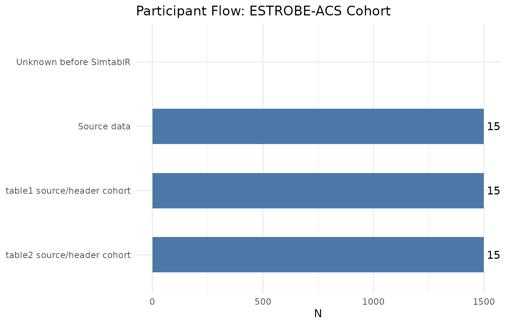

simtab Grammar, Reviewer Analyses, and Export: From Protocol to Manuscript
Source:vignettes/grammar-reporting-export.Rmd
grammar-reporting-export.RmdIn academic and clinical epidemiology, producing an analysis is only the beginning: investigators must document analysis plans, respond to peer-review critique with sensitivity and bias analyses, reconcile participant flow, and format manuscript-ready tables for scientific journals.
In this guide, we finalize the ESTROBE-ACS study for
publication. We demonstrate how SimtablR’s declarative grammar
(simtab), composite reporting (simtablr),
reviewer toolkit (sensitivity, e_value,
flow), methodological auditor (advise), and
multi-format export engines transition research from protocol to
publication.
1. The Declarative SimtablR Grammar
Clinical Context & Research Question: In pre-registered study protocols, how do we define an inert, audit-ready analysis specification before executing calculations, and how does verb closure allow post-hoc refinements?
While direct functions like table1() and
tb() provide quick entry points, the declarative grammar
allows you to define, inspect, and modify an analysis plan explicitly
before computation.
1.1 Building an Inert Specification (simtab_spec)
Calling simtab() records data references, variables,
summary policies, and formatting into an inert simtab_spec
object without executing statistical tests:
plan <- simtab(epitabl) |>
describe(c(age, sex, bmi, renal_impairment)) |>
stratify(adjudicated_acs) |>
set_summary("auto") |>
missingness(display = TRUE) |>
overall(TRUE) |>
test("auto") |>
label(
age = "Age (years)",
bmi = "Body mass index (kg/m²)"
) |>
fmt(d = 1)
# Printing displays the declared plan without computing
plan
#> <simtab_spec>
#> not yet computed
#> data: 1500 rows x 22 columns; hash c0787c425db7
#> describe: c(age, sex, bmi, renal_impairment)
#> stratify/by: adjudicated_acs
#> adjust: <unset>
#> summary: auto
#> measure: <unset> (ref: <unset>, conf.level: 0.95)
#> test: auto
#> design: <unset>
#> style: default1.2 Plan Validation & Evaluation
Before running calculations, validate() confirms the
plan is internally consistent. Then evaluate() computes the
numerical evidence:
validate(plan)
baseline_result <- evaluate(plan)
baseline_result
#> Characteristic Overall (N=1500) No (N=928) Yes (N=572) P-value
#> -----------------------------------------------------------------------------------------------------------
#> Age (years) [Mean (SD)] 62.0 (13.2) 60.5 (12.8) 64.4 (13.4) <0.001
#> Sex recorded for clinical assessment, n (%) 0.021
#> Female 686 (45.7%) 446 (48.1%) 240 (42.0%)
#> Male 814 (54.3%) 482 (51.9%) 332 (58.0%)
#> Body mass index (kg/m²) [Mean (SD)] 27.8 (4.9) 27.7 (4.8) 27.9 (5.1) 0.413
#> Missing 63 38 25
#> Renal impairment (eGFR below 60 mL/min/1.73 m2), n (%) 0.268
#> No 1184 (78.9%) 741 (79.8%) 443 (77.4%)
#> Yes 316 (21.1%) 187 (20.2%) 129 (22.6%)
#>
#> Tests: Welch t-test; N-1 chi-squared
#> ℹ Methodological guidance
#> 4 unadjusted p-values are reported in this table. Pipe into test(p.adjust =
#> 'holm') for family-wise control or test(p.adjust = 'BH') for
#> false-discovery-rate control.
#> Run simtablr_guidance("off") separately before printing to hide advice.1.3 Verb Closure: Modifying Existing Results
A core design feature of SimtablR is verb closure:
grammar verbs can be piped directly into computed
simtab_result objects. SimtablR updates the stored
specification and recomputes without mutating the original object:
# Add Standardized Mean Differences (SMD) to the computed baseline table
baseline_smd <- baseline_result |> test(smd = TRUE)
baseline_smd
#> Characteristic Overall (N=1500) No (N=928) Yes (N=572) SMD P-value
#> -----------------------------------------------------------------------------------------------------------------
#> Age (years) [Mean (SD)] 62.0 (13.2) 60.5 (12.8) 64.4 (13.4) 0.30 <0.001
#> Sex recorded for clinical assessment, n (%) 0.12 0.021
#> Female 686 (45.7%) 446 (48.1%) 240 (42.0%)
#> Male 814 (54.3%) 482 (51.9%) 332 (58.0%)
#> Body mass index (kg/m²) [Mean (SD)] 27.8 (4.9) 27.7 (4.8) 27.9 (5.1) 0.05 0.413
#> Missing 63 38 25
#> Renal impairment (eGFR below 60 mL/min/1.73 m2), n (%) 0.06 0.268
#> No 1184 (78.9%) 741 (79.8%) 443 (77.4%)
#> Yes 316 (21.1%) 187 (20.2%) 129 (22.6%)
#>
#> Tests: Welch t-test; N-1 chi-squared
#> ℹ Methodological guidance
#> 2 additional methodological notes hidden. Run simtablr_guidance("teaching")
#> separately before printing to show all advice.2. Composite Manuscript Reports with simtablr()
How do we assemble a complete epidemiological study report—pairing a descriptive Table 1 (demographics) with an inferential Table 2 (crude and adjusted associations)—in a single call?
Scientific manuscripts standardly report baseline characteristics
(Table 1) alongside multivariable associations for the primary exposure
(Table 2). simtablr() builds this combined report in one
call:
report <- simtablr(
epitabl,
outcome = adjudicated_acs,
exposure = renal_impairment,
vars = c(age, sex, smoking, hypertension, diabetes, renal_impairment),
adjust = c(age, sex, smoking, hypertension),
design = "cohort"
)
report
#> <simtab_report>
#> items: 2
#> data hash: c0787c425db7
#> methods: recorded
#>
#> table1
#> Characteristic Overall (N=1500) No (N=1184) Yes (N=316) P-value
#> --------------------------------------------------------------------------------------------------------------
#> Age at index presentation (years) [Mean (SD)] 62.0 (13.2) 59.3 (12.5) 71.9 (10.5) <0.001
#> Sex recorded for clinical assessment, n (%) 0.279
#> Female 686 (45.7%) 550 (46.5%) 136 (43.0%)
#> Male 814 (54.3%) 634 (53.5%) 180 (57.0%)
#> Smoking status, n (%) 0.893
#> Never 742 (49.5%) 582 (49.2%) 160 (50.6%)
#> Former 469 (31.3%) 372 (31.4%) 97 (30.7%)
#> Current 289 (19.3%) 230 (19.4%) 59 (18.7%)
#> History of hypertension, n (%) <0.001
#> No 732 (48.8%) 652 (55.1%) 80 (25.3%)
#> Yes 768 (51.2%) 532 (44.9%) 236 (74.7%)
#> History of diabetes, n (%) <0.001
#> No 1127 (75.1%) 949 (80.2%) 178 (56.3%)
#> Yes 373 (24.9%) 235 (19.8%) 138 (43.7%)
#> Renal impairment (eGFR below 60 mL/min/1.73 m2), n (%) <0.001
#> No 1184 (78.9%) 1184 (100.0%) 0 (0.0%)
#> Yes 316 (21.1%) 0 (0.0%) 316 (100.0%)
#>
#> Tests: Welch t-test; N-1 chi-squared; Pearson's Chi-squared test
#>
#> table2
#> Characteristic Overall (N=1500) No (N=928) Yes (N=572) P-value RR (95% CI) Adjusted RR (95% CI)
#> -----------------------------------------------------------------------------------------------------------------------------------------------------
#> Renal impairment (eGFR below 60 mL/min/1.73 m2), n (%) 0.268
#> No 1184 (78.9%) 741 (79.8%) 443 (77.4%) 1.00 (Ref) 1.00 (Ref)
#> Yes 316 (21.1%) 187 (20.2%) 129 (22.6%) 1.09 (0.94 - 1.27) 0.90 (0.76 - 1.05)
#>
#> Tests: N-1 chi-squared
#> ℹ Methodological guidance
#> 6 unadjusted p-values are reported in this table. Pipe into test(p.adjust =
#> 'holm') for family-wise control or test(p.adjust = 'BH') for
#> false-discovery-rate control.
#> Run simtablr_guidance("off") separately before printing to hide advice.You can inspect individual components directly: -
report$table1: Baseline descriptive table. -
report$table2: Bivariate and multivariable association
table.
3. Reviewer Analyses, Sensitivity, and Bias Auditing
When responding to journal peer reviewers, how do we evaluate sensitivity to alternative scales, quantify resilience to unmeasured confounding via E-values, and account for patient attrition?
During peer review, reviewers frequently request sensitivity tests, bias assessments, and methodological justifications.
3.1 Sensitivity Analysis with sensitivity()
sensitivity() tests how results behave under alternative
modeling decisions without overwriting the primary analysis:
# Primary association
primary <- tb(
epitabl,
renal_impairment,
adjudicated_acs,
flags = c("row", "rr"),
design = "cohort"
)
#> Note: No reference level specified for PR/OR calculation. Defaulting to the first level: 'No'.
# Test sensitivity to odds ratio scale and complete-case denominator
sens_res <- sensitivity(
primary,
measure = "OR",
denominator = "complete"
)
#> Note: No reference level specified for PR/OR calculation. Defaulting to the first level: 'No'.
#> Note: No reference level specified for PR/OR calculation. Defaulting to the first level: 'No'.
sens_res
#> <simtab_sensitivity>
#> Variation Measure Estimate 95% CI low 95% CI high Delta %
#> primary RR 1.091065 0.9373810 1.269945 0
#> measure OR 1.153885 0.8956577 1.486562 NA
#> denominator RR 1.091065 0.9373810 1.269945 0
#> Note
#>
#> Estimand changed from RR to OR; delta not computed.
#>
#>
#> Notes:
#> - Estimand changed from RR to OR; delta not computed.
#> ! Methodological warning
#> Outcome is common (38.1%); odds ratios can overstate the prevalence/risk
#> ratio. Consider measure = 'PR' for cross-sectional tables or
#> Poisson/log-binomial models for adjusted estimates.
#> 1 additional methodological note hidden. Run simtablr_guidance("teaching")
#> separately before printing to show all advice.3.2 Unmeasured Confounding: E-Value Analysis
To evaluate vulnerability to unmeasured confounding,
e_value() computes the minimum association strength that an
unmeasured confounder must have with both the exposure and outcome to
explain away the observed estimate:
ev <- e_value(primary)
ev
#> E-values
#>
#> source outcome term measure estimate conf.low conf.high
#> bivariate <NA> renal_impairment: Yes RR 1.091065 0.937381 1.269945
#> e_value e_value_ci approximation rare
#> 1.406276 1 FALSE FALSE
#> ℹ Methodological guidance
#> E-values summarise the minimum unmeasured-confounding strength needed to
#> explain away a ratio estimate. Interpret E-values alongside design quality,
#> measured confounding control, and outcome prevalence.
#> Run simtablr_guidance("off") separately before printing to hide advice.3.3 Methodological Advice and Decision Audit
SimtablR’s advice engine audits analyses against methodological best practices:
# Review fired advice entries
advise(primary)
#> list()
# Conduct an exhaustive audit of all rules (fired and silent)
audit_report <- advise(primary, audit = TRUE)
audit_report
#> SimtablR audit
#> Ruleset version: downscale-2026-09-23
#> Checked rules: 2
#> Fired: 0 | Silent: 2
#>
#> Silent rules:
#> complete_case_unreported_missingness, multiplicity_unadjustedTo explain the internal statistical decisions and fallback rules applied during computation:
why(primary)
#> SimtablR explanation
#> Status: computed result.
#> Engine: bivariate
#> Design: cohort
#> Measure: RR
#> Measure source: user
#> Ruleset version: downscale-2026-09-233.4 Participant Flow and Flowchart Visualization
Reconcile initial participant enrollment against the analyzed sample
using flow():
study_flow <- flow(report)
study_flow
#> <simtab_flow>
#> stage N excluded
#> Unknown before SimtablR NA NA
#> Source data 1500 NA
#> table1 source/header cohort 1500 0
#> table2 source/header cohort 1500 0
#> reason
#> Rows excluded before data reached SimtablR are not recorded.
#> Rows captured by SimtablR.
#> Source N shown in the table header; grouped columns can exclude records with a missing stratification value.
#> Source N shown in the table header; grouped columns can exclude records with a missing stratification value.
3.5 Reporting Checklists and Codebooks
To verify reporting compliance against international standards (STROBE for observational studies; STARD for diagnostic accuracy):
strobe_summary <- strobe(report)
head(as.data.frame(strobe_summary), 6)
#> item requirement status
#> 1 1 Title and abstract not-assessed
#> 2 2 Background and rationale not-assessed
#> 3 3 Objectives not-assessed
#> 4 4 Study design covered-by-output
#> 5 5 Setting not-assessed
#> 6 6 Participants covered-by-output
#> pointer
#> 1
#> 2
#> 3
#> 4 Recorded study design metadata.
#> 5
#> 6 Captured SimtablR source-data row count and variables.Generate a structured data dictionary / codebook:
cb <- codebook(epitabl[, c("age", "sex", "hypertension", "adjudicated_acs")])
head(cb)
#> <simtab_codebook>
#> variable label type n_unique
#> age Age at index presentation (years) continuous 503
#> sex Sex recorded for clinical assessment categorical 2
#> hypertension History of hypertension categorical 2
#> adjudicated_acs Adjudicated acute coronary syndrome categorical 2
#> levels/units n_missing (%) summary
#> 0 (0.0%) mean 61.97; median 61.90; range 18.00 to 94.00
#> Female, Male 0 (0.0%) Female, Male
#> No, Yes 0 (0.0%) No, Yes
#> No, Yes 0 (0.0%) No, Yes4. Publication Rendering, Journal Styling, and File Export
How do we apply target journal formatting (e.g., JAMA, NEJM) and export final tables directly to Microsoft Word (.docx), Excel (.xlsx), and interactive HTML?
SimtablR strictly separates statistical computation from journal presentation. Tables can be styled according to target journal guidelines and exported natively to Office formats.
4.1 Journal Presets
Apply journal formatting presets via style():
# List registered journal presets
list_journals()
#> [1] "default" "jama" "lancet" "nejm"
#> [5] "strobe-default"
# Apply JAMA styling (formatting, confidence intervals, p-value thresholds)
jama_table <- style(primary, "jama")
jama_table
#> | Adjudicated acute coronary syndrome
#> Renal impairment (eGFR below 60 mL/min/1.73 m2) | No Yes
#> -------------------------------------------------+--------------------------
#> No | 741 (62.6%) 443 (37.4%)
#> Yes | 187 (59.2%) 129 (40.8%)
#> -------------------------------------------------+--------------------------
#> Total | 928 572
#>
#> | Adjudicated acute coronary syndrome
#> Renal impairment (eGFR below 60 mL/min/1.73 m2) | Total
#> -------------------------------------------------+-------
#> No | 1184
#> Yes | 316
#> -------------------------------------------------+-------
#> Total | 1500
#>
#> Renal impairment (eGFR below 60 mL/min/1.73 m2) | RR (95% CI)
#> -------------------------------------------------+----------------------------
#> No | 1.00 (Ref)
#> Yes | 1.09 (0.94, 1.27), p = .26
#> -------------------------------------------------+----------------------------
#> Total |4.2 Interactive Tables (gt) and Office Tables
(flextable)
SimtablR outputs directly to gt for HTML documents and
flextable for Microsoft Word / PowerPoint:
as_gt(report$table2)| Characteristic | Overall (N=1500) |
adjudicated_acs
|
P-value | RR (95% CI) | Adjusted RR (95% CI) | |
|---|---|---|---|---|---|---|
| No (N=928) | Yes (N=572) | |||||
| Renal impairment (eGFR below 60 mL/min/1.73 m2), n (%) | 0.268 | |||||
| No | 1184 (78.9%) | 741 (79.8%) | 443 (77.4%) | 1.00 (Ref) | 1.00 (Ref) | |
| Yes | 316 (21.1%) | 187 (20.2%) | 129 (22.6%) | 1.09 (0.94 - 1.27) | 0.90 (0.76 - 1.05) | |
flextable::as_flextable(report$table2)adjudicated_acs |
||||||
|---|---|---|---|---|---|---|
Characteristic |
Overall (N=1500) |
No (N=928) |
Yes (N=572) |
P-value |
RR (95% CI) |
Adjusted RR (95% CI) |
Renal impairment (eGFR below 60 mL/min/1.73 m2), n (%) |
0.268 |
|||||
No |
1184 (78.9%) |
741 (79.8%) |
443 (77.4%) |
1.00 (Ref) |
1.00 (Ref) |
|
Yes |
316 (21.1%) |
187 (20.2%) |
129 (22.6%) |
1.09 (0.94 - 1.27) |
0.90 (0.76 - 1.05) |
|
Tests: N-1 chi-squared. | ||||||
4.3 Native Export to Word and Excel
Export complete tables and composite reports directly to
.docx or .xlsx files:
tmp_docx <- tempfile(fileext = ".docx")
tmp_xlsx <- tempfile(fileext = ".xlsx")
export_docx(report, path = tmp_docx)
#> Report exported to: /tmp/RtmpOYzAOy/file1e8b3e6bb5f7.docx
export_xlsx(report, path = tmp_xlsx)
#> Report exported to: /tmp/RtmpOYzAOy/file1e8b47fb682f.xlsx
# Verify exported files exist
file.exists(tmp_docx)
#> [1] TRUE
file.exists(tmp_xlsx)
#> [1] TRUE
# Clean up temporary demonstration files
unlink(c(tmp_docx, tmp_xlsx))4.4 Automated Methodology Prose
Finally, SimtablR automatically composes a reproducible Methods section describing the analytical steps taken:
cat(as_methods(report))
#> Continuous variables were summarised as mean (SD), distribution approximately symmetric. Group comparisons used Welch t-test; N-1 chi-squared; Pearson chi-squared test. Categorical variables were summarised with counts and percentages. Group comparisons used N-1 chi-squared. Crude RR was estimated using the Katz log risk-ratio estimator with 95% confidence intervals. Adjusted RR was estimated by log-binomial regression adjusting for Age at index presentation (years), Sex recorded for clinical assessment, Smoking status and History of hypertension, with 95% confidence intervals. The RR was chosen from the recorded study design (cohort).